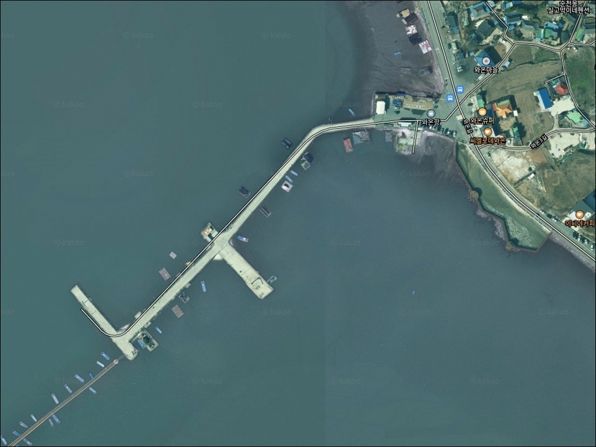
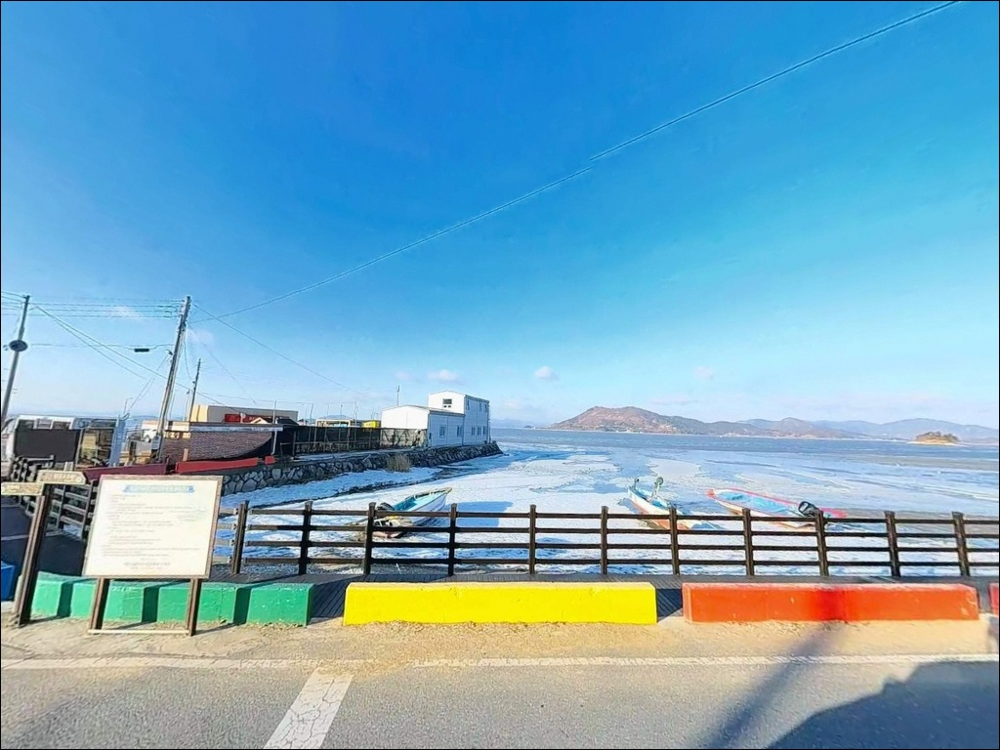
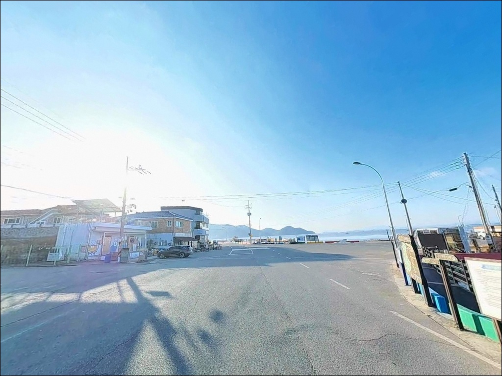
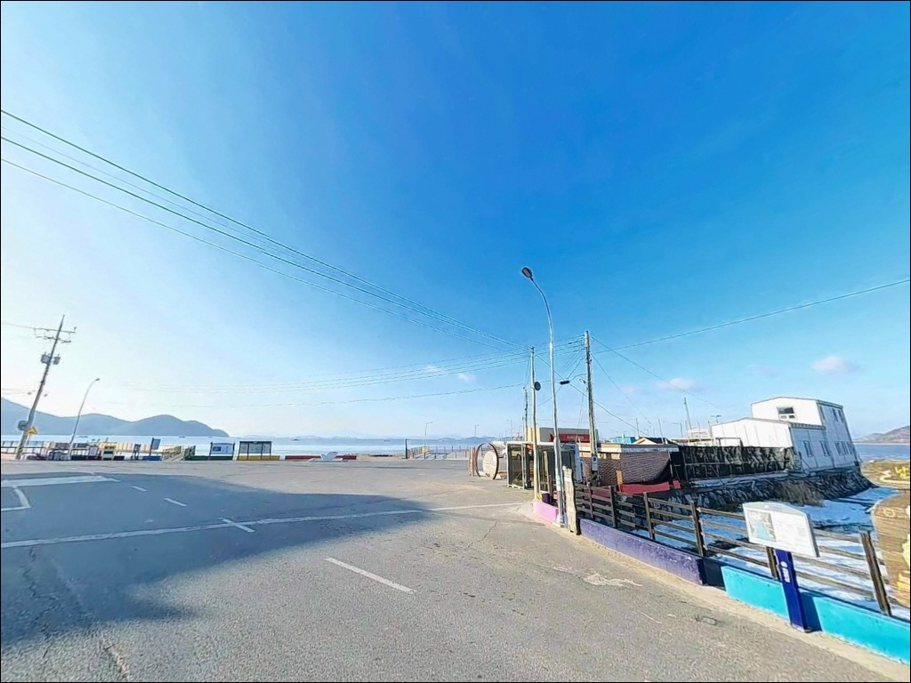
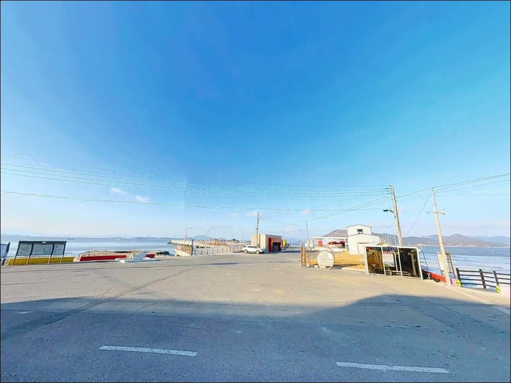
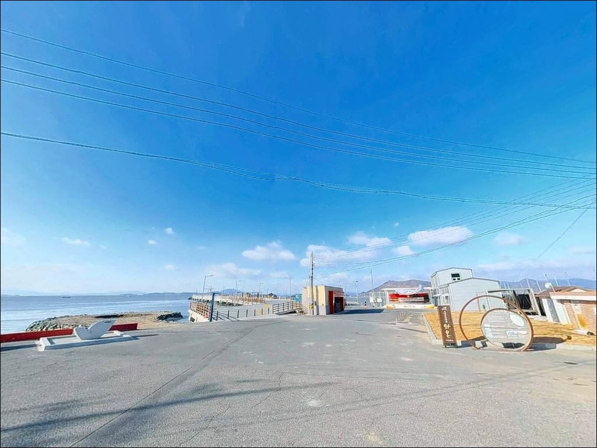
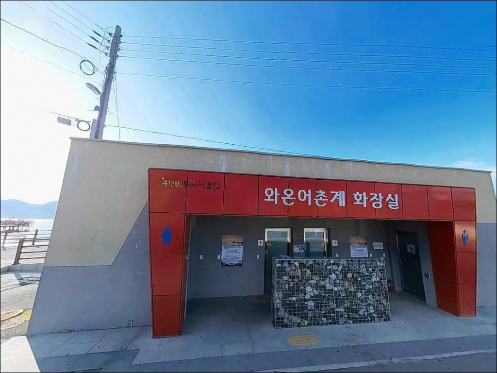
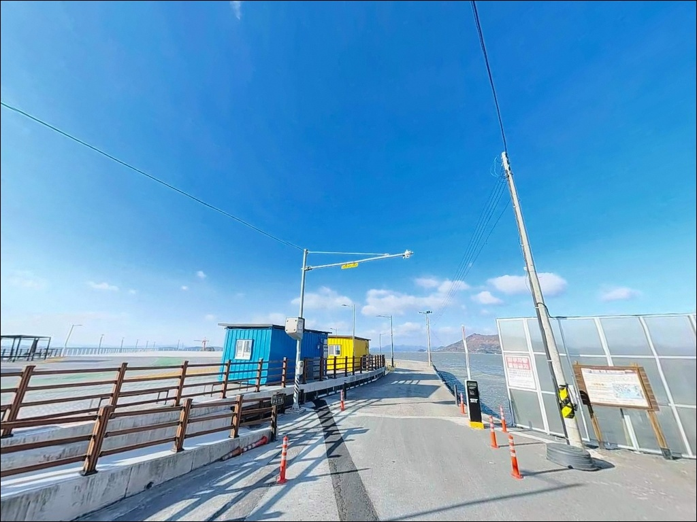
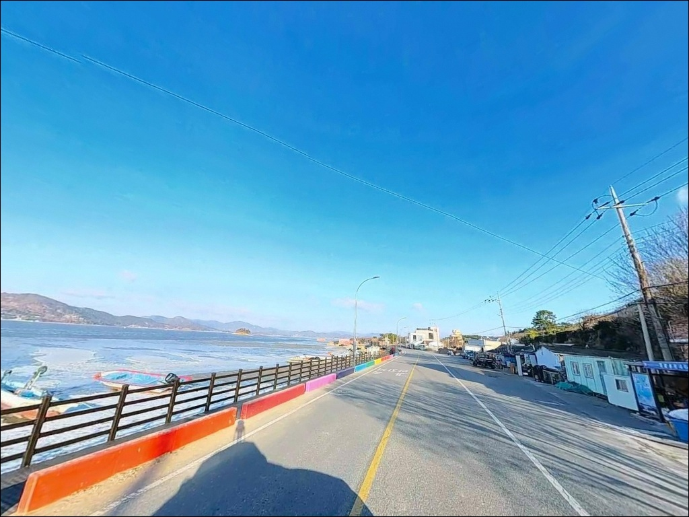

물때 모르고 가면 갯벌만 보는 순천만 와온항 원투낚시, 초들물 1시간
이 페이지에는 광고(제휴 링크 포함)가 있으며, 광고 링크를 통해 구매하면 운영자가 판매 수익 또는 수수료를 받을 수 있습니다. 포인트 사진: 카카오맵 스카이뷰·로드뷰. 이 페이지의 지도·사진 이미지는 카카오맵의 실제 서비스 이미지와 다를 수 있습니다.


포인트 안내
와온항
전남 순천시 해룡면 상내리 846-3
물때 계산 없이 와온항에 도착하면
광활한 갯벌만 눈앞에 펼쳐집니다.
간조 때 수심이 0.1m 안팎으로 내려가는 이 포인트는
초들물 전후 1~2시간이 실질적인 낚시 시간이며,
그 타이밍을 놓치면 채비를 펼칠 수 없습니다.
이 글은 와온항의 진입 동선, 갯벌 지형 기반
낚시 여건, 물때 판단 기준,
그리고 차박 여건에 집중합니다.
조황 단정이나 특정 어종 보장은
이 글의 범위에 포함되지 않습니다.

1. 진입 동선과 포인트 접근성
와온항 진입로는 순천시 해룡면 해안도로에서
직접 연결되는 왕복 2차선 포장도로입니다.
급커브나 경사 구간이 없어
카라반, 대형 캠핑카, 루프탑 텐트 차량 모두
진입에 어려움이 없는 수준입니다.
항 내부와 와온공원 주차장 주변에서
회차가 자유롭습니다.
주차 공간은 세 곳을 확보할 수 있습니다.
와온공원 공영주차장이 가장 넓고 안정적이며,
항 입구 공터와 방파제 초입 공간도
추가 주차 후보로 활용됩니다.
관광지 성격이 강한 지역 특성상
주간에는 방문객 차량이 많습니다.
낚시 목적이라면 일몰 이후 도착이
주차 여건상 유리합니다.
일몰 후에는 관광객 차량이 빠져
넓은 주차 공간을 여유롭게 이용할 수 있습니다.

2. 차박 환경과 야간 체류 여건
와온항의 차박 여건은 순천만권 포인트 중
가장 정비된 편입니다.
와온공원 공영주차장에
24시간 개방되는 공중화장실이 확보되어 있어
장시간 체류에 기본 조건이 갖춰져 있습니다.
야간 환경은 관광지형 해변 마을 분위기입니다.
해안도로와 공원 주변에 가로등과
경관조명이 설치되어 있어
완전 암흑형 포인트가 아닙니다.
프라이버시보다 안전성이 돋보이는 환경이며,
조용한 고립형 차박을 원한다면
더 인적이 드문 포인트를 선택하는 편이 낫습니다.
순천만 방향이 열려 있어 일몰 뷰가 뛰어납니다.
와온공원 주차장 경계면에 주차하면
차 안에서 순천만 낙조를 정면으로 바라볼 수 있습니다.
야간에는 민가와 카페 영업을 고려해
소음을 최소화하는 것이 기본 매너입니다.


3. 주변 편의시설 및 인프라 현황
와온해변 일대에는 카페가 여럿 영업하고 있어
간단한 식사와 음료 해결이 됩니다.
반경 3km 이내에 이마트24 편의점이 위치해
기본 식료품과 낚시 소품을
비교적 가까운 거리에서 보충할 수 있습니다.
대형 마트나 병원이 필요한 경우
북쪽 순천 신대지구 방향으로
15분 이내에 도시 인프라 이용이 가능합니다.
순천만권 포인트 중 생활 편의성이 가장 높은 편에 해당해
첫 방문자에게 부담이 적은 포인트입니다.

4. 물때를 알아야 자리가 생기는 포인트
와온항 방문 전 가장 먼저 확인해야 할 것은
물때입니다.
수심이 0.1~0.3m 수준의 갯벌형 포인트이기 때문에
간조 시에는 바닥이 광범위하게 드러나
어떤 채비를 던져도 낚시 자체가 불가능합니다.
바다타임에서 와온항 기준 물때를 확인하고
초들물 전후 1~2시간에 입장 시각을 맞추는 것이
기본 전략입니다.
순천만은 람사르 협약 습지이자
국가 명승 지역입니다.
방파제와 물량장 위에서의 낚시는
일반적인 어항 이용 범위에 해당하나,
갯벌 안쪽 진입은 절대 금지입니다.
썰물 시 갯벌로 들어갔다가
들물이 빠르게 들어오면 고립 위험이 있습니다.
낚조 명소로 유명한 지역 특성상
해 질 녘에는 관광객이 몰립니다.
이 시간대는 차량 통행과 보행자 이동이 많으므로
차량 이동과 낚시 동선에 주의가 필요합니다.
야간 원투 시에는 헤드랜턴을 지참하고
구명조끼를 착용합니다.

5. 지형 기반 낚시 여건 분석
와온항은 순천만 북쪽, 여자만 내측에 위치한
반폐쇄형 만 구조 어항입니다.
남서쪽으로 고흥반도, 동쪽으로 여수반도에
둘러싸인 여자만 특성상
외해 파도가 직접 유입되지 않아
항 내부는 항상 잔잔한 조건이 유지됩니다.
저질은 순천만 전역의 특성과 동일한 펄입니다.
수심은 만조 시에도 0.1~0.3m에 불과하며
간조 시에는 S자형 물길만 남긴 채
갯벌이 광범위하게 드러납니다.
이 물길이 핵심 포인트입니다.
초들물 시점에 물길이 살아나는 구간이
붕장어와 숭어 먹이 활동의 무대가 됩니다.
방파제 규모는 80m, 물량장은 282m입니다.
방파제 외측에 테트라포트가 일부 배치되어 있으며
방파제 폭이 넓게 조성되어 있어
채비 교환과 이동 동선이 여유롭습니다.
밑걸림은 갯벌 저질 특성상 거의 없어
원투 채비 운영이 편한 편입니다.
출조 전에 와온 낚시, 순천만 붕장어, 해룡면 원투낚시 등
최신 조황을 검색해 보시기 바랍니다.


6. 와온항에 어울리는 낚시 스타일
이 포인트에서 가장 잘 맞는 낚시는
원투낚시입니다.
갯벌 바닥 어종을 대상으로
참갯지렁이·청갯지렁이·홍갯지렁이를 미끼로
물골 방향으로 채비를 던지는 방식입니다.
붕장어와 망둑어가 주 대상이며
밑걸림이 거의 없어 다루기 쉽습니다.
들물이 살아나는 야간 원투낚시도
붕장어 공략에 유효한 패턴입니다.
여름 썰물 시에는 짱뚱어 훌치기낚시를 노려볼 수 있습니다.
갯벌이 드러나는 시점에
장대를 이용해 갯벌 경계부를 공략하는 방식으로
순천만권에서 오래전부터 이루어지던 전통적 낚시법입니다.
갯벌 안쪽 진입 없이 방파제와 석축 위에서
접근하는 방식으로 진행합니다.
물량장 내측 수면에서는 릴찌낚시나
떡밥낚시로 숭어를 노릴 수 있습니다.
들물 시 먹이를 찾아 내항으로 진입하는
숭어 무리를 민장대 또는 릴찌채비로 공략하는 방식입니다.
가족 단위 방문에도 잘 맞는 스타일입니다.
만조 시에는 석축 주변에서
소형 웜을 이용한 루어낚시로
망둑어와 농어 반응을 확인해볼 수 있습니다.
다만 수심이 얕은 갯벌형 포인트 특성상
활성도가 높은 시기에 한정해 유효한 편입니다.

7. 대안 포인트와 플랜 B 동선
와온항의 수심이 너무 얕아
조과가 기대에 못 미치는 날에는
봉전리방파제가 첫 번째 대안입니다.
와온항에서 차량으로 약 8km 거리로,
같은 여자만 권역이지만
순천만보다 만 입구에 가까워
수심이 다소 깊고 조류 영향이 더 강합니다.
원투낚시와 찌낚시 모두 유효한 구조입니다.
반경 4~5km 이내에는
우명방파제도 대안으로 고려할 수 있습니다.
와온항과 비슷한 순천만 내측 여건이지만
지형 구조가 달라
같은 물때에도 낚시 조건이 다르게 형성될 수 있습니다.
와온항과 병행 탐색하기 좋은 동선입니다.
수심이 더 확보되는 지형을 원한다면
여자만 남측 방면의 사곡방파제가 있습니다.
와온항에서 약 10km 거리로,
찌낚시와 루어 병행이 가능한 지형으로 전환됩니다.
차박 여건이 더 조용한 환경을 원한다면
봉전리방파제 인근이 민가 밀집도가 낮아
프라이버시 확보에 유리합니다.

물때 한 가지만 맞추면
순천만 갯벌이 낚시터가 됩니다
원투낚시로 붕장어와 망둑어를 노리거나
찌낚시로 숭어를 기다리는 낚시인이라면
와온항의 갯벌형 지형은
맞는 구조입니다.
특히 초들물 타이밍에 집중하는
패턴 낚시에 익숙한 낚시인일수록
이 포인트를 효율적으로 운용할 수 있습니다.
반면 수심 있는 방파제에서
루어를 주력으로 쓰는 낚시인에게는
갯벌 수심 구조 특성상
한계가 뚜렷한 편입니다.
이 경우 봉전리방파제나 사곡방파제를
기본 목적지로 설정하고
와온항은 물때 맞는 날 병행하는 식이
현실적인 접근법입니다.
24시간 화장실과 넓은 공영주차장이 있어
편의성을 중시하는 차박 낚시인에게
이 포인트가 가장 잘 맞습니다.
낙조 시각에 맞춰 순천만을 바라보며 자리를 잡고,
초들물 타이밍을 노려 채비를 던지는 출조 루틴이
와온항을 제대로 즐기는 방법입니다.